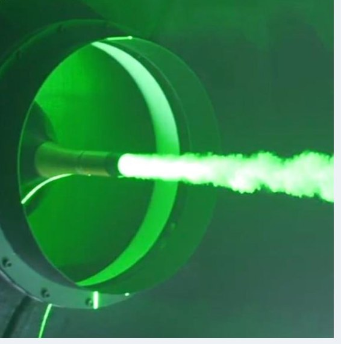
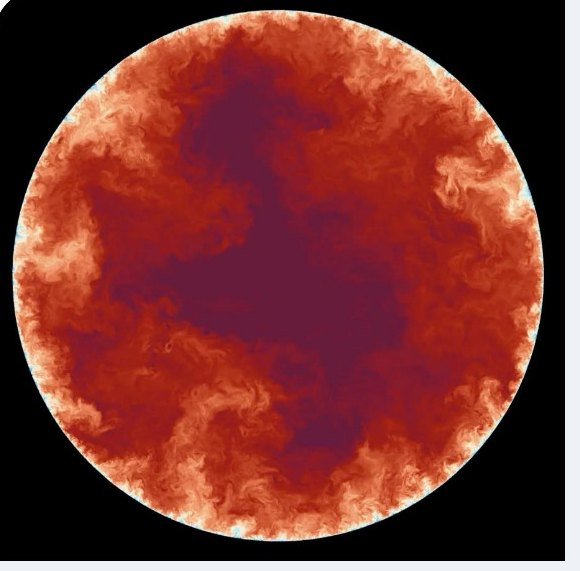
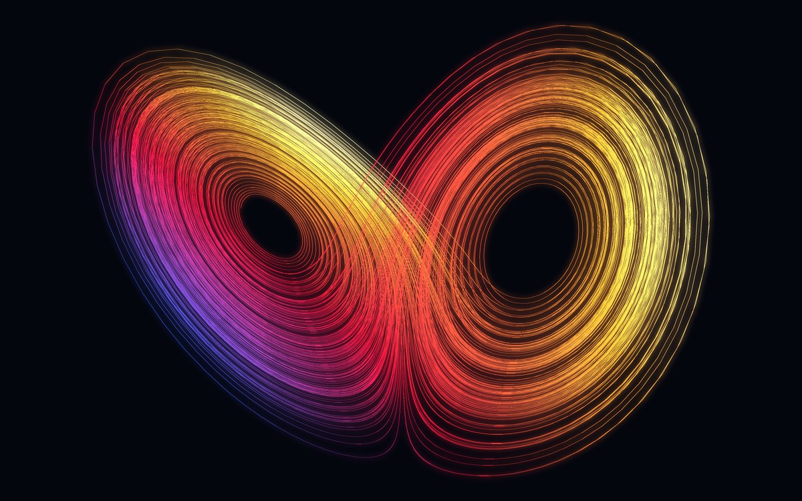
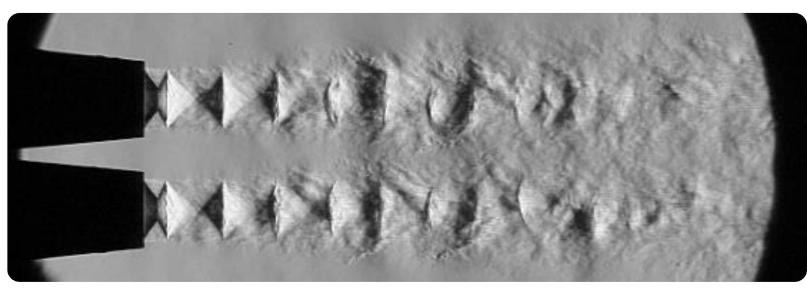

A cyber-physical laboratory for turbulence
Experiments, simulations and models exchanging self-correcting information about the same flow, through a hierarchy of interacting digital twins, for a more complete and less uncertain observation of turbulence.
Turbulence: a barrier to progress
From aircraft and fusion reactors to blood flow and climate, turbulence limits what we can predict, optimise and control. Its vast range of interacting scales, its stochastic behaviour and its chaotic sensitivity put it beyond the reach of experiment, simulation or modelling taken separately.


Enormous dimensionality
The scale range grows as Re3/4 along each of the three spatial dimensions.
Nonlinearity
Triadic interactions couple every scale to every other.
Stochastic behaviour
Only statistics repeat; every realisation is different.
Chaotic sensitivity
Tiny uncertainties grow until forecasts part from reality.
Three pillars, each with extraordinary progress and its own uncertainty

Experiment
Field measurement is the norm: time-resolved and tomographic PIV, particle tracking velocimetry, schlieren imaging, kilo-channel pressure-sensing arrays.
- Uncertainty · the smallest scales stay out of reach; noise is always present.
- Coverage · no simultaneous, time-resolved measurement of all variables in a volume.
- Latency · transfer and processing delay analysis.

Simulation
DNS and LES on GPU-accelerated supercomputers are narrowing the Reynolds-number gap with real applications.
- Uncertainty · initial and boundary conditions are never fully known.
- Scalability · memory-bound on GPUs; DNS remains slow and offline.
- Data deluge · petabytes of data, most of it never used.

Modelling
Data assimilation transformed weather prediction; reduced-order models make it fast enough to forecast.
- Forecast latency · real time puts a severe ceiling on model fidelity.
- Perfect-model assumption · unrealistic for high-Reynolds-number turbulence.
- Untested at scale · mostly demonstrated on simplified flows.
The DISTURB answer: a hierarchy of three digital twins
State-of-the-art data assimilation couples the pillars so that each corrects the others: measurement sparsity and noise are compensated by numerical precision, computational simplifications are corrected by experimental data, and model deficiencies are constrained by both.

Fidelity
Exascale simulation synchronised with high-resolution measurements: reconstructs what experiments cannot measure and what simulations cannot know.
Agility
Reduced-order twins distilled from DT1: reveal mechanisms, quantify uncertainty and the trade-off between cost and fidelity.
Action
A real-time twin synchronised with the experiment: tracks the flow, forecasts rare events and regime changes, and drives reactive control.
Three canonical flows, in water and in air

Turbulent jet · amplifier
Re ~106, subsonic to supersonic, dynamics and sound: wave packets, loud events, screech mode switching.

Open cavity · oscillator
Re 103–105: Rossiter tones, mode coupling, broadband–tonal intermittency.

Airfoil · both, with pitch & plunge
Re 103–4×105: separation, fluid–structure interaction, flapping control.